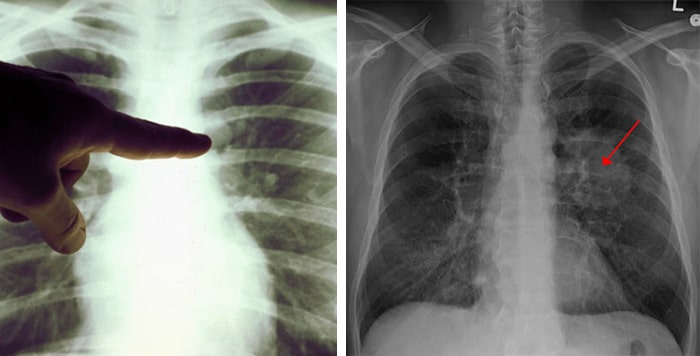
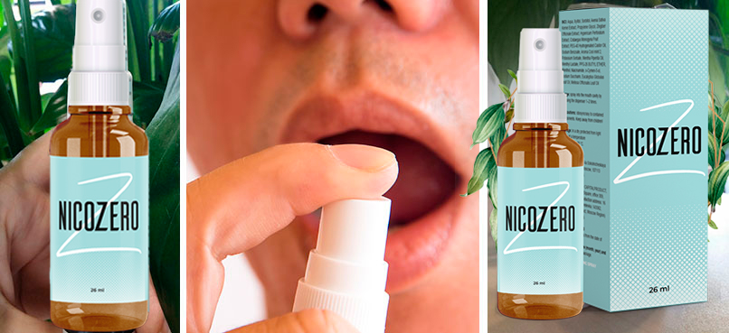
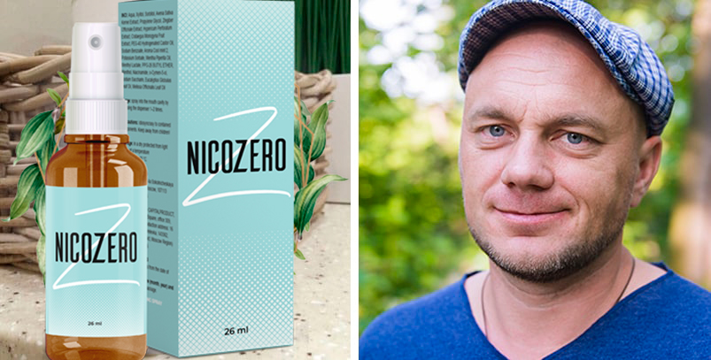

Soțul meu nu știe că am scris acest articol. Nu sunt sigură dacă i-ar conveni, dar vreau neapărat să împărtășesc povestea noastră, deoarece consider că va fi o lecție bună pentru toți cei care fumează.
Ne-am cunoscut cu aproape 14 de ani în urmă, pe atunci fuma foarte mult. Am avut o mulțime de certuri din cauza asta. La început, chiar l-am refuzat când m-a cerut de soție, i-am dar un ultimatum și i-am spus că fie renunță la fumat, fie uită de mine. Ei bine, a reușit să renunțe o perioadă, dar în cele din urmă, acest obicei oribil i-a învins voința.
De-a lungul vremii, am încetat să mă mai enervez din cauză că fuma. Nu părea să-i facă rău, doar că mirosea oribil tot timpul.
Soțul meu a început să tușească foarte mult și uneori se trezea în mijlocul nopții, deoarece aproape se sufoca. L-am trimis imediat la spital. Potrivit analizelor, existau șanse mari să aibă cancer la plămâni.
Am fugit imediat la clinica de oncologie. Din fericire, diagnosticul nu era corect. Soțul meu avea emfizem din cauza fumatului. Medicii au spus că este incurabil, deci trebuie să renunțe imediat la fumat dacă nu vrea să moară tânăr.
M-am gândit că asta îl va face să realizeze ce grav e totul și că va putea renunța la fumat. Cu toate acestea, din păcate, nici măcar asta nu a fost suficient pentru a scăpa de dependență. Eu nu am fumat niciodată, deci nu pot înțelege cum este posibil ca o persoană să se sinucidă intenționat, încet, dar sigur.
Am citit o mulțime de articole pe acest subiect și am petrecut mult timp pe forumuri de fumători. Am început să realizez ce dificil este să scapi de această dependență, deci, în cele din urmă, am reușit să nu-l mai învinovățesc pe soțul meu și să nu-i mai blestem voința patetică.
Am cumpărat tot felul de plasturi și gume de mestecat, însă nimic nu părea să ajute. Iubitul meu soț se stingea sub ochii mei și nu puteam face nimic în această privință.
Într-o zi m-am întâlnit cu o prietenă pe care nu o văzusem de mulți ani. Și ea era fumătoare înrăită, fuma țigară după țigară, de multă vreme. Cu toate acestea, am observat că în timp ce ne beam cafeaua, nu a ieșit să fumeze.
Se lăsase de fumat cu doi ani în urmă. A ajutat-o o metodă nouă, numită . Acesta este un spray special care nu doar că elimină dependența de fumat, ci îți și curăță complet corpul de nicotină.
Era ultima noastră șansă. După ce m-am întors acasă, am început să caut spray-ul imediat. Am citit o mulțime de comentarii de la alți utilizatori, care m-au ajutat foarte mult. Toate îndoielile mele au dispărut și am comandat produsul pentru soțul meu.
La început, a fost sceptic, însă a început totuși să-l folosească. Imediat după prima utilizare, a spus că a început să se simtă dezgustat de fumul de țigară. De fiecare dată când simțea că vrea să fumeze, îl făcea imediat să se răzgândească.
După o săptămână, nu a fumat nici măcar o țigară, ceea ce era un record pentru el. 11 zile mai târziu, a reușit să scape de pofta de țigări. În cele din urmă, nu mai suporta să se afle în compania celor care fumează.
După o lună, am mers din nou la medic. Acesta a spus că nu a mai văzut niciodată asemenea rezultate la fumători înrăiți. Plămânii soțului meu au revenit la normal și nu mai exista niciun semn de boală.
Deci, dragi prieteni, renunțați la fumat înainte să fie prea târziu! Indiferent ce spun ceilalți, trebuie să știți că fumatul este foarte periculos. În plus, renunțatul la fumat are consecințe pozitive nu doar asupra sănătății, ci și asupra bugetului. Într-un singur an de când a renunțat soțul meu la fumat, am economisit peste 1.500 euro, iar anul acesta vom merge într-o vacanță exotică pentru prima dată, datorită acestor economii. Dacă nu poți învinge singur dependența, te va ajuta, cu siguranță. Încearcă și vei vedea că totul este în regulă!

-
Amalia VlădescuȘi eu știu ce greu e să renunți la fumat. Nu înțeleg cum se poate enerva cineva pe fumători că nu au suficientă voință. Am încercat deja de 10 ori să renunț la fumat, dar pur și simplu nu reușesc. Mulțumesc pentru sfat, voi încerca acest spray.Răspunde
-
CamiSoțul meu fumează tot timpul, iar această poveste m-a cam speriat...Răspunde
-
Costi HobanȘi eu am reușit să renunț la fumat cu ajutorul lui . Produsul te scapă complet de pofta de țigări, garantez. Acum urăsc țigările.Răspunde
-
MarianaChiar v-a ajutat să scăpați de nicotină? Fumez deja de 15 ani și nu pot renunța. Vreau să dispară complet din corpul meu...Răspunde
-
PetreVoi comanda pentru soția mea. M-am săturat de mirosul ei constant de țigări. Nu mai rezist așa. În plus, fumatul poate să o ucidă în scurt timp.Răspunde
-
DianaFumez din când în când, însă e doar un obicei prostesc. Dacă fumezi un pachet pe zi, vei avea, într-adevăr, probleme grave.Răspunde
-
CristinaȘi eu am auzit multe despre spray. Toate prietenele mele l-au încercat. Din fericire, eu am fost ocolită de această dependență nesuferită.Răspunde
-
IoanaBunicul meu a murit de cancer la plămâni, a fumat toată viața. Eu nu am încercat niciodată să fumez și nici nu o voi face.Răspunde
-
 Laura ComanPăcat că nu am auzit despre această metodă mai demult. Am reușit să renunț la fumat pe cont propriu, dar am recidivat de multe ori. Acum, fumez doar o țigară pe săptămână, însă vreau să scap definitiv de acest obicei.Răspunde
Laura ComanPăcat că nu am auzit despre această metodă mai demult. Am reușit să renunț la fumat pe cont propriu, dar am recidivat de multe ori. Acum, fumez doar o țigară pe săptămână, însă vreau să scap definitiv de acest obicei.Răspunde -
GeorgeȘi eu am ajuns deja de trei ori la spital din cauza emfizemului, iar acesta a apărut din cauza țigărilor idioate. Apoi am cumpărat spray-ul, iar problema a dispărut. Îl recomand tuturor cu încredere.Răspunde